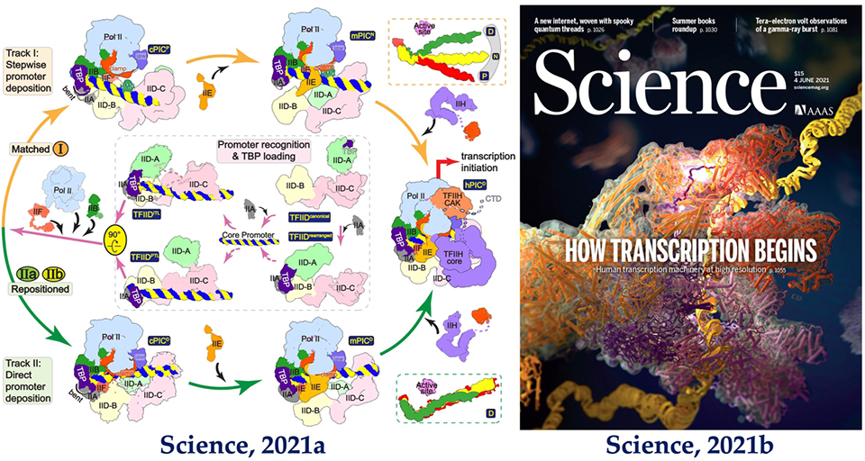

Devotions
用铅华绘展风物，用脚步丈量大地
昔日南开大学在三沙市的挂职干部，刘波教授与队员们扎根三沙沃土，深度访谈“南开人的南海情”，积累访谈5万余字、影音20余小时，指导撰写的海试调研报告、实践报告、调研报告累计超10万字
铅华成景
Picturesque
从白河之津到南海之滨，从4月份开始筹划，跨越2600公里，在祖国海疆实践、扎根、服务。劈波斩浪500海里，在甲板上凝视深蓝海疆，我会想到“每个人都有自己的际遇和机缘，都要在自己所处的时代条件下谋划人生、创造历史”；看到鲜红的国旗扬帆座座岛屿，我会想到“我所在处即中国”；当听到一位位三沙工作者的淳朴讲述、当在试验平台上看海平面上的点点灯火，我都会坚信“不啻微芒、造炬成阳”的力量。
映日别样红
Touching
现场感受‘问天’实验舱的发射,见证我国航天事业的发展的历史时刻，让学生在社会实践中去发现问题、解决问题，以服务国家重大战略需求、关注社会民生为导向，以创新的精神和行动切实解决问题，才能更好地发挥南开‘知中国，服务中国’的优良传统。
万户之梦
Celestial sky
身在南海再聆听南海撞机事件，是另一种五味陈杂的辛酸。世上没有从天而降的英雄，只有挺身而出的凡人。永远铭记海权领空不让寸土，强国担当永远不随时间消蚀。
英魂永存
Memorial
‘开出巴掌地，垒石一座山’，村支书洪义乾苦干20年带领村民在万物难生的土地上磕破头硬闯一条种茶的致富路。丘濬施茶的故事依旧在施茶村流传，施茶驿站的传统仍然在延续，“为公”、“奉献”始终丰盈着施茶的精神内核。
